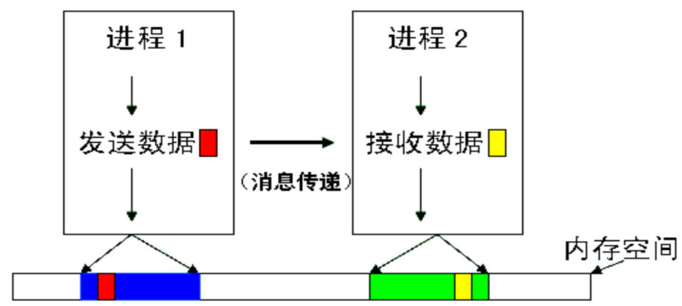
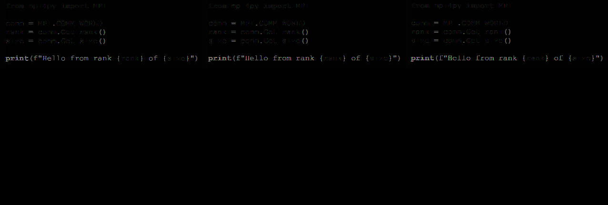
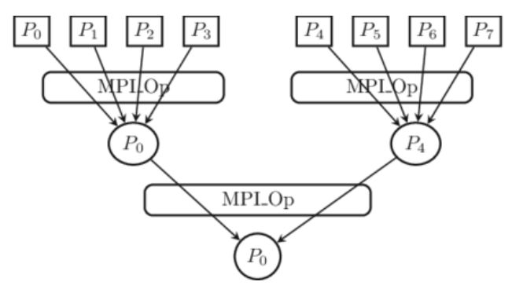

MPI（Message Passing Interface，消息传递接口）是一种编写分布式并行程序的函数库规范（标准）。它不是一种具体的编程语言，也不是一个具体的软件实现，而是一套被广泛接受的接口标准。不同组织或个人可以基于该规范给出自己的具体实现，例如：
MPI 专门针对消息传递模型设计，为常用的编程语言（C、C++、Fortran、Python 等）都提供了接口支持。本课程以 Python 的 mpi4py 库为主要教学工具。
MPI 为编写分布式并行计算程序带来了以下便利：
| 对比维度 | MPI | MapReduce |
|---|---|---|
| 编程模型 | 消息传递模型，显式控制进程间通信 | 数据并行模型，Map 和 Reduce 两个阶段 |
| 通信方式 | 程序员显式调用 send/recv 等通信函数 | 框架自动处理 shuffle/sort 等通信 |
| 适用场景 | 科学计算、数值模拟、需要频繁迭代和通信的计算 | 大规模数据处理、ETL、日志分析 |
| 数据存储 | 数据通常在内存中，由各进程独立管理 | 数据存储在分布式文件系统（如 HDFS）中 |
| 容错机制 | 通常依赖检查点（checkpoint）恢复 | 内置任务重试、数据副本容错 |
| 编程复杂度 | 较高，需手动管理数据划分和通信 | 较低，只需实现 Map 和 Reduce 函数 |
| 性能 | 延迟低，适合细粒度并行 | 适合粗粒度批处理，延迟较高 |
MPI 程序通常采用 SPMD（Single Program Multiple Data，单程序多数据） 模型：
在 SPMD 模型中，程序员编写一份代码，通过 mpiexec -n N 命令启动 N 个进程同时运行这份代码。每个进程通过查询自己的 rank（编号）来确定自己的身份，然后根据分支条件（if-else）执行不同的代码路径，处理不同的数据片段。
SPMD 模型的核心思想可以概括为：
$$ \text{相同的代码} + \text{不同的 rank} \rightarrow \text{处理不同的数据} $$
SPMD 模型：同一份代码在多个进程上运行，通过 rank 区分身份并处理不同数据分片
进程是 MPI 程序的基本执行单元：
单机多进程与多机多进程的对比：
| 特性 | 单机多进程 | 多机多进程 |
|---|---|---|
| 通信方式 | 共享内存或网络通信 | 仅网络通信 |
| 延迟 | 较低 | 取决于网络 |
| 扩展性 | 受机器核数限制 | 理论无限 |
进程组（Process Group）：
通信器（Communicator）：

MPI 进程、进程组与通信器模型
MPI.COMM_WORLD 是默认的全局通信器，包含 MPI 程序启动时的所有进程from mpi4py import MPI
# 获取默认全局通信器
comm = MPI.COMM_WORLD
# 获取当前进程的 rank
rank = comm.Get_rank()
# 获取总进程数
size = comm.Get_size()
MPI 基于消息传递模型（Message Passing Model），其核心特征包括：
消息传递模型与共享内存多线程模型的关键区别：
| 维度 | 消息传递模型（MPI） | 共享内存模型（多线程） |
|---|---|---|
| 内存模型 | 分布式内存，各进程独立地址空间 | 共享内存，所有线程共享同一地址空间 |
| 通信方式 | 显式 send/recv | 直接读写共享变量 |
| 同步方式 | 阻塞通信隐合同步 | 锁、信号量、条件变量等 |
| 可扩展性 | 可扩展到多机 | 受限于单机 |
| 编程复杂度 | 需管理数据划分和通信 | 需处理数据竞争和死锁 |
以下以 Python 的 mpi4py 库为例介绍 MPI 核心 API。
在 C/C++ 的 MPI 中，MPI_Init() 和 MPI_Finalize() 是必须调用的函数，分别用于初始化和终止 MPI 环境。在 mpi4py 中，这些调用是自动完成的——导入 mpi4py 时自动调用 Init，程序结束时自动调用 Finalize，程序员通常不需要显式调用它们。
# mpi4py 自动初始化 MPI 环境，无需显式调用 Init/Finalize
from mpi4py import MPI
comm = MPI.COMM_WORLD
rank = comm.Get_rank()
print(f"Process {rank} is running")
# mpi4py 会自动在程序结束时调用 Finalize
这是 MPI 中预定义的全局通信器，包含程序启动时的所有进程。它是最常用的通信器对象，所有进程间通信都通过它（或其派生的子通信器）进行。
rank = comm.Get_rank()
size = comm.Get_size()
-n 参数指定的进程数name = comm.Get_name()
MPI_COMM_WORLD）点对点通信涉及两个进程：一个发送方和一个接收方。
comm.send(data, dest=1, tag=0)
参数说明： - obj：要发送的 Python 对象（任意可序列化对象：int、float、list、numpy array 等） - dest（int）：目标进程的 rank（必须指定具体值） - tag（int，默认 0）：消息标签，用于区分不同类型的消息。接收方可以通过 tag 选择性接收
注意：send() 是阻塞型通信——调用后函数不会立即返回，直到发送缓冲区可以被安全重用为止（对于小消息通常很快返回，大消息可能等待）。
data = comm.recv(source=0, tag=MPI.ANY_TAG)
参数说明：
- source（int 或 MPI.ANY_SOURCE）：指定接收来自哪个进程的消息。使用 MPI.ANY_SOURCE 可接收任意进程发来的消息
- tag（int 或 MPI.ANY_TAG）：指定接收哪种标签的消息。使用 MPI.ANY_TAG 可接收任意标签的消息
- 返回值：接收到的 Python 对象
注意：recv() 是阻塞型通信——如果指定 source 的消息尚未到达，调用进程会一直等待（阻塞）。
这两个是大写开头的版本，用于发送和接收原始数组（raw array）或 NumPy 数组：
import numpy as np
# 发送 numpy 数组（比 send(obj) 更快，因为避免了序列化开销）
data = np.array([1.0, 2.0, 3.0], dtype='d')
comm.Send([data, MPI.DOUBLE], dest=1, tag=0)
# 接收 numpy 数组
recv_buf = np.zeros(3, dtype='d')
comm.Recv([recv_buf, MPI.DOUBLE], source=0, tag=MPI.ANY_TAG)
特点：
- 要求发送端和接收端的数据类型必须匹配（使用 MPI 数据类型常量如 MPI.DOUBLE）
- 比 send(obj) 和 recv() 更快，因为避免了 Python 对象的序列化/反序列化过程
- 适用于大规模数值数组的传输
集体通信涉及通信器中的所有进程（或一个大的子集），所有进程必须同时调用同一个集体通信函数。

MPI 集合通信：广播、散播、收集、归约等操作的数据流向
广播：将 root 进程的数据发送给通信器中的所有进程（包括 root 自身）。
# 进程 0 准备数据并通过广播发给所有进程
if rank == 0:
data = {"key": "value", "numbers": [1, 2, 3]}
else:
data = None
data = comm.bcast(data, root=0)
# 此时所有进程的 data 都等于进程 0 发送的数据
重要：bcast 是一个集体操作，所有进程必须都调用它。root 进程提供数据，其他进程虽然传入 data=None，但函数返回后所有进程都拥有了相同的数据。
散播（分发）：将 root 进程上的一个列表数据分散到所有进程，每个进程获得列表中的一项。
if rank == 0:
data = [100, 200, 300, 400] # 长度为 size 的列表
else:
data = None
my_data = comm.scatter(data, root=0)
# rank=0 获得 100, rank=1 获得 200, rank=2 获得 300, rank=3 获得 400
核心要点：发送列表的长度必须等于进程总数，列表的第 i 个元素被发送给 rank=i 的进程。
收集：与 scatter 相反——每个进程将自己的数据发送给 root 进程，root 进程将所有数据汇总成一个列表。
my_data = rank * 10 # 每个进程有自己的数据
all_data = comm.gather(my_data, root=0)
# root 进程：all_data = [0, 10, 20, 30]
# 其他进程：all_data = None
归约（Reduce）：将所有进程的数据按照指定的操作符进行归约计算，结果存储在 root 进程中。
my_value = rank + 1 # rank=0:1, rank=1:2, rank=2:3, rank=3:4
total = comm.reduce(my_value, op=MPI.SUM, root=0)
# root 进程：total = 10 (1+2+3+4)
# 其他进程：total = None
MPI.Reduce 支持的操作符：
| 操作符 | 含义 | 说明 |
|---|---|---|
MPI.SUM |
求和 | $$ \sum_{i=0}^{n-1} x_i $$ |
MPI.PROD |
乘积 | $$ \prod_{i=0}^{n-1} x_i $$ |
MPI.MAX |
取最大值 | $$ \max(x_0, x_1, ..., x_{n-1}) $$ |
MPI.MIN |
取最小值 | $$ \min(x_0, x_1, ..., x_{n-1}) $$ |
MPI.LAND |
逻辑与 | 所有元素的逻辑与 |
MPI.LOR |
逻辑或 | 所有元素的逻辑或 |
MPI.BAND |
按位与 | 所有元素的按位与 |
MPI.BOR |
按位或 | 所有元素的按位或 |
MPI.MAXLOC |
最大值位置 | 返回最大值及其所在 rank |
MPI.MINLOC |
最小值位置 | 返回最小值及其所在 rank |
全局归约：与 reduce 功能类似，但所有进程都能获得归约结果（不需要指定 root）。
my_value = rank + 1
total = comm.allreduce(my_value, op=MPI.SUM)
# 所有进程的 total 都等于 10
allreduce 等价于 reduce + bcast，但性能更好（优化了通信模式）。
全局收集：所有进程相互收集数据，每个进程都获得包含所有进程数据的完整列表。
my_data = rank * 10
all_data = comm.allgather(my_data)
# 所有进程的 all_data 都等于 [0, 10, 20, 30]
栅栏同步：所有进程在此处等待，直到通信器中所有进程都到达该调用点后才继续执行。
print(f"Rank {rank}: Before barrier")
comm.barrier() # 所有进程在此同步
print(f"Rank {rank}: After barrier")
# 所有"Before barrier"输出后，才会输出"After barrier"
用途： - 在关键时间节点（如开始计时）进行全局同步 - 将程序的执行分为不同的阶段 - 调试时确保输出顺序可控

MPI 通信模式概览：阻塞、非阻塞、点对点与集合通信
阻塞通信（本课程重点讲解的内容）：
非阻塞通信（课程提及但未深入展开）：
request.Wait() 或 request.Test() 确保数据安全# 非阻塞通信示例（概念性）
req = comm.Isend([data, MPI.INT], dest=1, tag=0)
# 在此期间可以做计算...
req.Wait() # 确保发送完成
阻塞通信 vs 非阻塞通信时序对比：阻塞通信在操作完成前暂停调用者，非阻塞通信立即返回并支持计算·通信重叠
点对点通信是 MPI 中最基本的通信模式，涉及恰好两个进程：
comm.send() 或 comm.Send()comm.recv() 或 comm.Recv()通信模式特点：
完整示例——p2p.py：
from mpi4py import MPI
comm = MPI.COMM_WORLD
rank = comm.Get_rank()
size = comm.Get_size()
if rank == 0:
# 进程 0 发送数据给进程 1
data = {"message": "Hello from rank 0", "value": 42}
comm.send(data, dest=1, tag=10)
print(f"Rank {rank}: Sent data to rank 1")
elif rank == 1:
# 进程 1 接收来自进程 0 的数据
data = comm.recv(source=0, tag=10)
print(f"Rank {rank}: Received data from rank 0: {data}")
点对点通信：数据从发送方缓冲区序列化后经网络传输，接收方反序列化还原为 Python 对象
集体通信涉及通信器中的所有进程（或一个较大的子集）。
MPI 六种集合通信操作总览：Broadcast、Scatter、Gather、Reduce、Allgather、Allreduce
bcast.py 示例——一对多通信：
from mpi4py import MPI
comm = MPI.COMM_WORLD
rank = comm.Get_rank()
if rank == 0:
data = [1, 2, 3, 4, 5] # root 进程准备数据
else:
data = None
data = comm.bcast(data, root=0)
print(f"Rank {rank}: Received data = {data}")
# 所有进程输出: Received data = [1, 2, 3, 4, 5]
树形广播算法：
MPI 底层通常使用树形结构来优化广播通信。基本原理如下：
这种方法将通信复杂度从 $$O(N)$$（串行逐个发送）降低到 $$O(\log N)$$（树形转发）。
假设有 $$N$$ 个进程，每个消息大小为 $$M$$ 字节，则：
其中 $$B$$ 为网络带宽。
数据划分的核心操作。将一个大数组按块分发给所有进程。
Scatter 示意图：
数据：[A0, A1, A2, A3] (root=0 持有)
↓ ↓ ↓ ↓
结果： P0 P1 P2 P3
各进程计算结果的汇总操作，与 Scatter 方向相反。
Gather 示意图：
数据： P0 P1 P2 P3
↓ ↓ ↓ ↓
结果：[A0, A1, A2, A3] (root=0 获得)
在收集的同时执行合并计算，如求和、求最大值等。
Reduce 示意图（求和）：
数据： P0=1 P1=2 P2=3 P3=4
\ | | /
┌───┴────┴───┐
│ MPI.SUM │
└────────────┘
↓
root=0 获得 10
环形归约算法（一种优化实现）：
利用 MPI Reduce 规约通信实现对 $$N$$ 个自然数 $$1, 2, 3, ..., N$$ 的累加求和。
并行算法设计思想：Map + Reduce 模式
各个节点完成局部计算（Map 阶段）→ 局部结果归并（Reduce 阶段）
代码实现（reduce.py）：
from mpi4py import MPI
comm = MPI.COMM_WORLD
rank = comm.Get_rank()
size = comm.Get_size()
N = 100 # 求和上界
# 1. 数据划分：计算每个进程负责的范围
chunk_size = N // size
start = rank * chunk_size + 1
end = (rank + 1) * chunk_size if rank != size - 1 else N
# 2. 局部计算：每个进程对自己负责的数字求和（Map 阶段）
local_sum = sum(range(start, end + 1))
print(f"Rank {rank}: range=[{start}, {end}], local_sum={local_sum}")
# 3. 全局归约：所有进程的局部求和结果汇总（Reduce 阶段）
total_sum = comm.reduce(local_sum, op=MPI.SUM, root=0)
if rank == 0:
expected = N * (N + 1) // 2 # 高斯求和公式
print(f"Parallel sum result: {total_sum}")
print(f"Expected result: {expected}")
print(f"Correct: {total_sum == expected}")
算法分析：
利用基本的 send/recv 方法手动实现并行求和：
from mpi4py import MPI
comm = MPI.COMM_WORLD
rank = comm.Get_rank()
size = comm.Get_size()
N = 100
chunk_size = N // size
start = rank * chunk_size + 1
end = (rank + 1) * chunk_size if rank != size - 1 else N
# 局部求和
local_sum = sum(range(start, end + 1))
if rank == 0:
total = local_sum
# 进程 0 收集所有其他进程的局部和
for i in range(1, size):
partial = comm.recv(source=i, tag=0)
total += partial
print(f"Total sum (via p2p): {total}")
else:
# 其他进程将局部和发送给进程 0
comm.send(local_sum, dest=0, tag=0)
与 Reduce 版本的比较：
| 方面 | send/recv 版本 | reduce 版本 |
|---|---|---|
| 代码复杂度 | 需要手动编写收集逻辑 | 一行 reduce 调用 |
| 通信模式 | 串行——进程 0 逐个接收 | 树形/环形——并行优化 |
| 性能 | $$O(p)$$ 次通信 | $$O(\log p)$$ 次通信 |
| 死锁风险 | 存在（如果编码不慎） | 不存在（MPI 保证正确性） |
2025 年编程作业题目：利用 MPI 实现对连续函数 $$f(x)$$ 在区间 $$[a, b]$$ 上的定积分计算。
梯形法公式：
将 $$[a, b]$$ 划分为 $$n$$ 个小区间，每个小区间宽度为 $$h = \frac{b - a}{n}$$，则：
$$ \int_a^b f(x) dx \approx \frac{h}{2} \left[ f(x_0) + 2f(x_1) + 2f(x_2) + ... + 2f(x_{n-1}) + f(x_n) \right] $$
其中 $$x_i = a + i \cdot h$$。
并行化思路：
1. 将积分区间 $$[a, b]$$ 均匀划分为 $$p$$ 个子区间（$$p$$ 为进程数）
2. 每个进程对自己的子区间使用梯形法进行局部积分计算
3. 主进程（root=0）使用 comm.reduce(op=MPI.SUM) 汇总各进程的局部积分结果
并行算法代码框架：
from mpi4py import MPI
import numpy as np
def f(x):
"""被积函数，这里以 sin(x) 为例"""
return np.sin(x)
comm = MPI.COMM_WORLD
rank = comm.Get_rank()
size = comm.Get_size()
a, b = 0.0, np.pi # 积分区间
n = 1000000 # 总小区间数
# 1. 数据划分：每个进程处理的子区间
local_n = n // size
local_a = a + rank * local_n * (b - a) / n
local_b = local_a + local_n * (b - a) / n
# 2. 局部计算（梯形法）
h = (local_b - local_a) / local_n
x = np.linspace(local_a, local_b, local_n + 1)
y = f(x)
local_integral = h * (0.5 * y[0] + np.sum(y[1:-1]) + 0.5 * y[-1])
# 3. 全局归约（Reduce）
total_integral = comm.reduce(local_integral, op=MPI.SUM, root=0)
if rank == 0:
print(f"Integral of sin(x) from 0 to pi: {total_integral}")
print(f"Exact value: 2.0")
print(f"Error: {abs(total_integral - 2.0)}")
2026 年课程实验题目：利用 MPI 实现矩阵乘法 $$C = A \times B$$ 的并行计算。
按行划分（Row-wise Decomposition）并行策略：
算法示意图：
[A0] [A0 × B]
[A1] × B = [A1 × B] ← 各进程并行计算
[A2] [A2 × B]
[A3] [A3 × B]
核心代码框架：
from mpi4py import MPI
import numpy as np
comm = MPI.COMM_WORLD
rank = comm.Get_rank()
size = comm.Get_size()
m, k, n = 1000, 500, 800 # 矩阵维度
# 1. 主进程生成矩阵 A 和 B
if rank == 0:
A = np.random.rand(m, k)
B = np.random.rand(k, n)
else:
A = None
B = None
# 2. 广播矩阵 B 给所有进程
B = comm.bcast(B, root=0)
# 3. 按行分发矩阵 A
rows_per_proc = m // size
local_A = np.zeros((rows_per_proc, k))
comm.Scatter(A, local_A, root=0)
# 4. 局部矩阵乘法计算
local_C = np.dot(local_A, B) # (rows_per_proc × n)
# 5. 收集所有局部结果
if rank == 0:
C = np.zeros((m, n))
else:
C = None
comm.Gather(local_C, C, root=0)
if rank == 0:
# 验证正确性
C_expected = np.dot(
np.random.rand(m, k) if False else A, # 这里需要重新生成或保存原始 A
B
)
print(f"Result shape: {C.shape}")
性能瓶颈分析：
第一步：安装 Python
建议使用 Anaconda 发行版，它自带 conda 包管理器，方便后续操作。
第二步：安装 MPI 实现（Microsoft MPI）
mpiexec.exe 通常出现在：C:\Program Files\Microsoft MPI\Bin\第三步：配置系统环境变量
将 MS-MPI 安装目录添加到系统环境变量 PATH 中：
C:\Program Files\Microsoft MPI\Bin
第四步：安装 mpi4py 库
打开 Anaconda Prompt 或 CMD，执行：
pip install mpi4py
或使用 conda：
conda install -c conda-forge mpi4py
注意：安装 mpi4py 时会自动检测并使用系统已安装的 MPI 库（如 MS-MPI），所以一定要先安装 MPI 实现，再安装 mpi4py。
第五步：验证安装
编写一个简单的测试程序 test_mpi.py：
from mpi4py import MPI
comm = MPI.COMM_WORLD
rank = comm.Get_rank()
size = comm.Get_size()
print(f"Hello from rank {rank} of {size}")
使用以下命令运行（假设使用 4 个进程）：
mpiexec -n 4 python test_mpi.py
预期输出（顺序可能不同）：
Hello from rank 0 of 4
Hello from rank 1 of 4
Hello from rank 2 of 4
Hello from rank 3 of 4
# 1. 安装 Open MPI
sudo apt-get install openmpi-bin openmpi-common libopenmpi-dev
# 2. 安装 mpi4py
pip install mpi4py
# 3. 验证
mpiexec -n 4 python test_mpi.py
单机多进程运行：
mpiexec -n 4 python program.py
-n 4：启动 4 个进程python program.py：每个进程执行的程序多机多进程运行：
首先创建主机文件 hosts.txt：
192.168.1.11 slots=2
192.168.1.12 slots=2
然后运行：
mpiexec -n 4 -hostfile hosts.txt python program.py
-hostfile hosts.txt：指定主机列表文件slots=2：表示该主机最多运行 2 个进程-n 4 指定，MPI 会根据 slots 自动分配到不同主机1. 打印调试（最常用）：
print(f"[Rank {rank}] At checkpoint A: data = {data}")
注意：多进程输出顺序不确定，建议使用 barrier 控制输出顺序，或在输出中加入 rank 标识。
2. comm.barrier() 辅助调试：
在代码的特定位置插入 barrier，可以帮你确定是哪个进程在哪一步出了问题：
# 阶段1
do_something()
comm.barrier() # 如果程序在此处卡住，说明有进程未完成阶段1
# 阶段2
do_something_else()
comm.barrier()
3. 单步检查法：
先用 2 个进程运行程序，确认基本逻辑正确后再增加进程数。
| 错误类型 | 原因 | 解决方法 |
|---|---|---|
| 死锁 | send/recv 顺序不当 | 调整 send/recv 调用顺序，或使用非阻塞通信 |
| 数据不匹配 | Send/Recv 数据类型不一致 | 确保使用相同的 MPI 数据类型常量 |
| 进程数不能整除 | 数据划分不均 | 使用更灵活的数据划分策略 |
| MPI_ERR_TRUNCATE | 接收缓冲区小于实际消息 | 增加缓冲区大小 |
| 进程卡住无响应 | 某进程未调用集体通信函数 | 确保所有进程都执行了相同的集体通信调用 |
1. 数据划分优化：
chunk_size = N // size
remainder = N % size
if rank < remainder:
start = rank * (chunk_size + 1) + 1
end = start + chunk_size
else:
start = rank * chunk_size + remainder + 1
end = start + chunk_size - 1
2. 通信优化：
reduce > 手动 send/recv 收集3. 数组传输优化：
Send()/Recv()（大写版本）传输 NumPy 数组，避免 Python 对象的序列化开销4. 减少 Python 层面开销：
import time
start = time.time()
# ... 计算
compute_time = time.time() - start
start = time.time()
# ... 通信（如 reduce）
comm_time = time.time() - start
print(f"[Rank {rank}] Compute: {compute_time:.3f}s, Comm: {comm_time:.3f}s")
经查阅 2019 年、2020 年、2020 年（回忆版）和 2022 年共四套试卷，历年试卷中未出现直接考查 MPI 具体 API（如 send、recv、reduce 等）编程的题目。
但是，MPI 所体现的消息传递模型概念以及分布式并行计算思想在试卷中被多次考查，以下列出与 MPI 概念间接相关的题目并提供解析。
原题：设计分布式系统时通常采用消息传递模型，简述消息传递模型的含义。（4分）
解析：
消息传递模型是分布式系统中最基本的通信模型，其核心含义包括：
send(msg, dest) 和 recv(buffer, source)，通信操作可能阻塞或非阻塞这正是 MPI 所基于的核心模型。MPI 为消息传递模型提供了标准化的 API 实现，简化了分布式程序的编写。
原题：消息传递模型与设计多线程并行计算系统时采用的模型有何不同？（2分）
解析：
| 比较维度 | 消息传递模型 | 多线程共享内存模型 |
|---|---|---|
| 内存模型 | 各进程/线程拥有独立地址空间 | 所有线程共享同一地址空间 |
| 通信方式 | 显式 send/recv 通信 | 直接读写共享变量 |
| 同步机制 | 通信操作隐含同步 | 需要锁、信号量等显式同步 |
| 数据竞争 | 天然避免（无共享数据） | 可能出现 race condition |
| 可扩展性 | 可扩展到多机/集群 | 受限于单机 CPU 核数 |
原题：除了 RPC 和消息队列通信方式，分布式系统中不同节点之间还可以采用哪些通信方式？（列举 2 种）（4分）
解析：
可供列举的通信方式包括：
MPI 作为其中一种重要的通信方式，特别适合需要低延迟、高吞吐量和频繁数据交换的并行计算场景。
原题：要利用分布式计算系统对一个大规模数据集进行排序，你所知道的排序算法中哪一种更适合？为什么？（4分）
解析：
归并排序（Merge Sort） 更适合分布式并行排序，原因如下：
如果用 MPI 实现并行归并排序，可以这样设计：
- 用 scatter 将数据分发给各进程
- 各进程对本地数据排序（完全并行，无通信）
- 用多轮的 reduce 或自定义通信完成多路归并
comm.Get_rank()：获取当前进程 rankcomm.Get_size()：获取总进程数comm.send(obj, dest, tag)：阻塞发送 Python 对象comm.recv(source, tag)：阻塞接收 Python 对象comm.Send([buf], dest, tag)：发送原始数组（大写版本）comm.Recv([buf], source, tag)：接收原始数组（大写版本）comm.bcast(obj, root)：广播——从 root 发送给所有进程comm.scatter(list, root)：散播——分发列表到各进程comm.gather(obj, root)：收集——各进程数据汇总到 rootcomm.reduce(obj, op, root)：归约——合并计算（root 获得结果）comm.allreduce(obj, op)：全局归约——所有进程获得结果comm.allgather(obj)：全局收集——所有进程互相收集comm.barrier()：栅栏同步| 概念 | 阻塞 send/recv | 非阻塞 Isend/Irecv |
|---|---|---|
| 返回值时机 | 操作完成后返回 | 立即返回 request 对象 |
| 缓冲区安全 | 调用返回后可复用 | 需 Wait() 确认后复用 |
| 死锁风险 | 较高 | 较低（但需检查 request） |
| 通信-计算重叠 | 不支持 | 支持 |
| 概念 | scatter | gather | reduce | allreduce |
|---|---|---|---|---|
| 数据流向 | root → 所有 | 所有 → root | 所有 → root | 所有 ↔ 所有 |
| root 参数 | 需要 | 需要 | 需要 | 不需要 |
| 操作符 | 无 | 无 | 需要指定（SUM等） | 需要指定（SUM等） |
| 所有进程获得 | 一部分 | root 全量 | root 有结果 | 所有人有结果 |